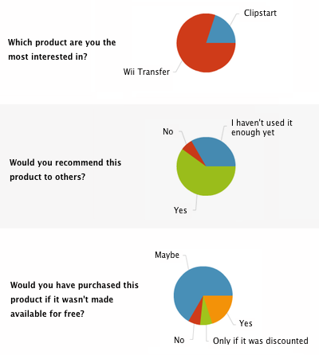

This week on Core Intuition we follow up on Apple news, then discuss the sale of Unread and all the new activity around RSS apps and services. It makes a good complement to some of my recent posts on microblogging.
Tag Archives: apple
Apple needs Beats Music
John Gruber asks, on the rumor that Apple will acquire Beats:
“The Beats streaming service is interesting, but can’t Apple do that on its own, as an expansion of the iTunes Music Store and iTunes Radio?”
Unfortunately I think the answer is no, Apple can’t easily do anything like what Beats Music has done. Not because they lack the skill, but because they lack the desire to actually do the work and hire the staff to make it happen. Compare iTunes Radio side by side with Beats Music. Beats Music isn’t just a streaming service; it’s more like a platform for curating playlists and discovering music.
I like Beats Music so much that I wrote two posts recently about it. Here’s a snippet from each, first on building something you love:
“iTunes Radio looks like something they felt they had to build, not something they wanted to build. Beats Music is in a completely different league, with a deep set of features and content. It looks like an app that’s had years to mature, not a 1.0.”
And then on ending the top 200 by doubling down on featured apps, just as Beats Music has done for music curation:
“How would this fix the junk problem in the App Store? Simple. No one in their right mind would ever feature one of these ad-filled, ‘re-skinned’ cheap apps. Great recommendations mean less reliance on search, making scam apps more difficult to find by accident.”
However, I agree with Gruber that on the surface this potential acquisition doesn’t really seem Apple-like. It would be unusual for them to acquire a high-profile brand. As much as I’d love to see the Beats Music team join Apple to improve iTunes and the App Store, I’ll be a little surprised if it actually happens. Maybe they have something else in mind that we can’t see yet.
Higher standard for Apple
Guy English writes about why Apple was questioned on the fingerprint sensor in the iPhone 5S but Samsung wasn’t for their new phone. I like this part about holding Apple to a higher standard:
“Apple is held to a higher standard of conduct. They’ve spent years, countless hours of hard work, and untold advertising dollars, to earn that expectation. They have it.”
Expecting the best from a company isn’t unfair; it’s a form of respect. We want Apple to be amazing, and when they fall a little short, we’re disappointed. If they disappoint too many times in a row, we’ll no longer expect greatness. That that hasn’t happened yet says everything about quality at Apple.
We love music
In my short post about why we chose Mapbox for Sunlit, I said I wanted to use it because the folks working at Mapbox clearly love maps. We are so used to mega-companies like Apple, Google, and Microsoft trying to provide every possible service, it’s nice sometimes to just buy directly from a specialist.
I think that’s why Beats Music is going to be successful. Music is all they’re doing, they’ve hired a staff of specialists — curators who are passionate about not just music but specific genres — and even their sister company makes music products: headphones and speakers. For more background on Beats Music, I recommend this write-up from MacStories and this (http://www.theverge.com/2014/1/21/5325766/interview-with-beats-music-ceo-ian-rogers-video).
Remember when Steve Jobs introduced the iPod? He said: “We love music. And it’s always good to do something you love.” As he continued to play some of his favorite songs, we believed him. The driving force behind the iPod and iTunes was to make it significantly easier to listen to music. They hit it out of the park and changed the music industry.
Today, Apple is either spread too thin or content to do the bare minimum only. iTunes Radio looks like something they felt they had to build, not something they wanted to build. Beats Music is in a completely different league, with a deep set of features and content. It looks like an app that’s had years to mature, not a 1.0.
I’d like to see Apple get back to doing fewer things and doing them well. That means no TV or smartwatch. They need more product categories like photography, which they excel at. The iPhone camera is the best, the built-in Photos and Camera apps are great, and there’s a rich layer of third-party apps to fill in additional features. Apple’s photos ad perfectly captures this.
Apple, fall in love with the next product category and lead us there. We’re ready for the next thing you love, not the next thing that Wall Street assumes everyone wants.
Apple’s misunderstood ad
Apple has produced some amazing ads over the years. 1984, introducing the original Mac; the Think Different campaign; and one of my favorite this year, about photos.
Their new ad “Misunderstood” is also great. Federico Viticci has a rundown of the details and how brilliantly it unfolds. I first noticed the video via Neven Mrgan, who had this to say on App.net:
“Apple’s new ad (‘Misunderstood’) is technically perfect: https://www.youtube.com/watch?v=ImlmVqH_5HM …but I have to say it doesn’t quite ring true to me. Kids use iPhones to shut out the family and hang out within their own social circle (and that’s ok).”
He’s right. My daughters will likely escape to Instagram and various chat apps to connect with their friends through the holidays. But also I think ads like this work so well not because they represent reality, not because they’re true, but because we want them to be.
Multiplane
“We spend a lot of time on a few great things.” — Designed by Apple in California
In 1940, Ub Iwerks, the animator behind Walt Disney’s first Mickey Mouse shorts, came back to the Disney studios after a 10-year absence. Ub had famously produced hundreds of drawings alone each day for one of those first Mickey Mouse shorts, but Ub’s return to Disney would also be remembered for his contribution to the technical side of film production, with advances in cameras and special effects. In an industry with extreme specialization — you either did backgrounds, or animation, or ink-and-paint — Ub’s talents bridged both the artistic and technical.
One of Ub’s inventions while away from Disney was called the multiplane camera. Perfected by others leading up to Snow White, in a massive camera stand over 10 feet tall, the multiplane’s innovation was to allow a background to be split into levels. Foreground trees might be painted on the glass of the first level, then the characters sat underneath that, and then farther back layers for a building, with others behind that for hills and sky.
To provide a sense of depth, camera operators could vary the distance between each plane. And movement for each level could be synchronized at different speeds, giving it a beautiful parallax effect. Distant background levels moved more slowly and were naturally blurred and out of focus.
80 years after Ub’s invention, the multiplane is alive in iOS 7. Previous versions of iOS were built on a single plane with raised and textured areas on that surface, like a topographical map except with buttons instead of mountains. iOS 7 is instead designed with multiple flat layers. Each level is strikingly flat, but by layering two or three, spaced apart, Apple has achieved an overall sense of depth.
It’s a return to basics. Simple things can remain simple, readable. When clarity is needed, everything goes flat. But it’s a framework that allows for subtle motion and depth without changing what works about the new, content-first flat design. iOS 7’s control center blurs the layer below. The home screen background sits deeper too, as if only the app icons are touching the screen. Photos scroll under the navigation bar.
Each plane is painted flat as if on glass. There can be no text drop shadows, no textures, without ruining the effect. And the result of this strict metaphor is equally valuable: there are no drop shadows to distract or obscure an app’s real content.
Disney’s multiplane camera, first in a dedicated rig and then recreated in software, lasted for decades, until the era of 3D computer animation. iOS 7’s new look won’t last that long, but the core concepts should carry Apple for years. I really like where they’re headed.
The $229, camera-less iPod Touch
Ahead of WWDC, Apple dropped the 4th-generation iPod Touch from their lineup and replaced it with a slimmed down $229 iPod Touch. To achieve this lower price, they made a big sacrifice: no rear-facing camera.
Most surprising to me is that this change comes just weeks after the iPhone’s Photos Every Day commercial, one of the most beautiful ad campaigns Apple has ever run. Removing the camera from the iPod Touch transforms it from a peer of the iPhone, capable of the same kind of photos and videos, to nothing more than a game and internet device. It is the only shipping iOS device that can’t be used as a traditional camera.
As we know, people frequently use even the iPad as a camera, holding it up to take pictures at concerts, their kid’s basketball game, and at any family gathering. When all you have is a cheap phone, you absolutely want to use the iPad as a camera, because it means you can sync and share the photos.
My daughters have the older, smaller-screen iPod Touch and frequently use the camera with friends. Instagram, in fact, has become very popular with teens and pre-teens. Can you imagine how great it would be to have grown up in the 1980s, for example, with the ability to take essentially unlimited photos? Angry Birds may have taken the mobile spotlight when iOS went mainstream, but in a dozen years when these games are just a fun memory, we’ll still have some of the JPEGs, first-hand accounts of life in middle school.
I’m sure dropping the rear camera was a very tough decision for Apple, especially thinking about wanting more memory and speed to run iOS 7. But I’d rather have no FaceTime, slower CPU, less memory, and only 8 GB of storage any day of the week if it meant I could take photos. The rear camera is priceless.
Macworld guest essays
There were a couple special essays on Macworld recently — guest posts from the developer community. First Brent Simmons, who argues that Microsoft isn’t the enemy anymore:
“The threat to Macintosh was not that Windows machines were cheaper, or that people had bad taste—the biggest reason was that they worked with everything. That was why Apple asked Microsoft in 1997 to continue developing Office for Macs, so we could at least say you could run Word and Excel on Macs. […] But, these days, everything works with everything.”
And followed by Cabel Sasser, with a similar theme:
“I sometimes very awkwardly find myself rooting for Microsoft, Nokia—anybody—to put up a good fight and keep that fire burning under Apple’s collective behind. The smartest, most incredible people work in Cupertino, and their capabilities are boundless and their drive is endless, but sometimes—especially as a developer—you get the feeling that Apple doesn’t really need you, and will do just fine without you, thank you very much. I want Apple to need us.”
Both great essays.
Apple and the impression of being small
Jonathan “Wolf” Rentzsch at the C4 conference in 2007 defined indie as simply “non-large”. This covers not just the small, one- and two-person companies, but also the bigger software development shops like Realmac, Smile, Panic, and Omni that have 10-40 employees but still feel independent. They’re all part of the community. Panic may have a bunch of employees now but it appears from the outside like it’s not that much more complex of a company than if Cabel Sasser, Steven Frank, and their friends were building great apps out of someone’s apartment.
Small is personable, nimble, and bright. Small makes customers feel like a company is not that different than the rest of us.
One of the magic tricks that Apple has pulled off is somehow maintaining a similar feel even as they have grown to be the world’s largest tech company. They’re bigger in revenue than Microsoft, Google, Oracle, and a dozen other software companies that have a much more obvious over-sized, bureaucratic feel. But you walk into an Apple Store to chat with an employee at the Genius Bar, or browse apple.com looking for a product, and it’s almost as if nothing has changed in the last decade. The complexity of the supply chain, of too many products, of layers of management — it’s all hidden.
Why aren’t Apple employees allowed to blog? Part of it is secrecy, sure. But too many voices also creates noise, and noise makes simple things messy, confusing. Apple still gives the impression of being smaller than they really are because our view of them is heavily filtered. What we see is the beautiful tip of a massive iceberg.
And maybe that’s why pundits keep waiting for Apple to fail. Because the company doesn’t look that different, the doubters just can’t comprehend how big and unstoppable Apple has become under the surface.
No new Apple products yet
Don McAllister is worried that Apple hasn’t announced anything new this year:
“I don’t know about you, but I’m starting to get a bit twitchy about the lack of product announcements from Apple. […] It’s usually quiet after Christmas, but by this time last year we’d already had the iPad 3 launch and the announcement of Mountain Lion.”
A few replies on App.net to Don’s post also caught my eye. Simon Wolf said:
“As a developer, a bit of breathing space between iOS and OS X versions is actually rather nice.”
Like many folks, I have a mountain of work to do and I always seem perpetually behind schedule. Apple’s aggressive releases add even more anxiety about updating apps to keep up with the latest APIs and hardware. I would be perfectly happy with Mac OS X and iOS releases on alternating years, and new hardware either when it’s ready or at predictable event dates like WWDC.
Smartphone religion
Stephen Hackett of 512 Pixels, commenting on a Wired essay by Mat Honan:
“Maybe it’s just the headache I’ve had since the Samsung Galaxy 4 event or the fact that Apple’s turning up the heat, but I find the increasingly defensive views held in the technology community increasingly offensive.”
I got into the Mac in the 1990s during the lead-up to Apple’s certain doom, so I spent quite a lot of time arguing with Windows users. The problem with the new version of that debate, Apple vs. Samsung and the smartphone wars, is that I’m not sure it’s ever going to end. There are good phones on either side, the pundits can’t wait for Apple to fail but Apple is strong, and there’s no hope to escape the noise for those of us who just want to build some apps.
Kevin Lynch at Apple
John Gruber has a series of posts questioning Apple’s judgement in hiring Kevin Lynch. This one best sums it up:
“I get that the guy worked for Adobe and had to play for the home team, but as CTO he backed a dying technology for years too long. In 2007 when the iPhone shipped Flash-free, that was one thing. But for Adobe to still be backing the Flash horse in 2010 when the iPad came out — they just looked silly.”
All of that is true. But instead of reflecting poor judgement, I think Kevin Lynch joining Apple could be good news in what it says about Apple. They didn’t hire him blindly. Apple knows what Kevin has been working on, knows what he’s said in public, and at this moment probably knows much better than we do what it was like to be at Adobe those last few years. For all we know Apple cares more about his work on Creative Cloud than Flash.
Kevin also has a rich history that is closely tied with the Mac. He worked as a developer on FrameMaker. He worked at General Magic alongside old-school Apple engineers. He worked at Macromedia when they started building web tools.
I heard him speak much later at SXSW in 2002, for a joint presentation he gave with Jeffrey Veen. At the time I disagreed with Kevin’s vision for Flash and the web, but the SXSW talk was interesting enough that I referenced it afterwards and again later. Kevin was so good that he somehow demonstrated he got the web even as he pitched a product that was increasingly at odds with it.
Was he wrong about Flash? Yes. But I choose to view his move to Apple as an indication that he was at the wrong company more than that he was completely wrong-headed. Maybe it was time for something new, a course correction back to the earlier part of his career. Skepticism about this hire is fine, but to treat him as an outsider is to forget the other great things he’s worked on. Once you’ve built Mac software, no matter how long ago, you’ll always be one of us.
I hope Apple sees it that way too. Because if Apple is confident of anything, it’s that they can’t get stuck in one old way of thinking, can’t discount good people because of one unforgivable bad idea. That Apple is able to brush aside the Flash debate as yesterday’s news — even accept as a VP someone who was at the heart of that debate, and on the wrong side — shows to me that they’re only looking forward.
Podcasts app
Podcasts are more popular than ever. We’re lucky right now to have a bunch of podcast networks and great iOS clients, including the newly-released official Podcasts app from Apple. My favorite remains Instacast on iPhone, but there are other good choices like Downcast.
It’s never easy for developers when Apple arrives into your market with free competition, especially if it might one day be bundled on the OS alongside the Music and Videos apps. I wish the third-party guys the best of luck.
But for podcast creators, the extra exposure can only be a good thing. I hope we can welcome even more listeners to our Core Intuition podcast. We just opened a new way to send in feedback and questions, too: Glassboard. Use invite code COREINT on the web or iPhone app to join the board and get a little behind-the-scenes look into the podcast.
iPad Pro is the new iPod Photo
I’m fascinated with the iPad “3” rumors because on the surface they make so little sense. Apple just shipped the iPad 2, no competitors can match it, and demand is strong. Why mess with a good thing so soon?
But it almost fits when you give it a name like “Pro” (or iPad Retina, or whatever). This isn’t a replacement for the current iPad; it’s another layer to the product lineup. And like the awkwardly-named iPod Photo from 2004, I bet the iPad Pro is meant to be temporary. It’s a way to sell a high-end, over-priced and over-pixeled iPad before the technology is cheap enough for the masses. A year or two from now, the Retina Display will be available in all iPads, and the “Pro” name will fade away, just like iPod Photo did when all iPods got a color screen.
Push-based sync
“Guy English writes about iCloud”:http://kickingbear.com/blog/archives/202 and the magic glue (Push Notifications’ persistent connection) that makes it work:
“Each of these new features tickle the persistent ‘push’ connection and trigger some action on the device. The short-form state may be transmitted immediately and set on any connected device within moments. Document syncing is likely to trigger a negotiation process to compare the state on any one device with The Truth stored on Apple servers and replace the document on the device with the latest revision — this has the advantage of limiting the window between syncing where conflicts are most likely to occur.”
Sync speed matters. The first note sharing server I built for VitalSource years ago assumed a lot of offline time, and despite “my blogging in 2007 that it was”:http://www.manton.org/2007/01/bookshelf_note_sharing.html “magic”, in practice it could take 5-10 minutes before all your computers got their act together to get a set of highlights completely synced. With that kind of lag, note edits might happen on a client in the meantime, so we remembered conflicts everywhere and had a UI for resolving them.
Too complicated. The new system, recently rolled out in Bookshelf for iPhone and iPad, syncs so much more efficiently and quickly that conflicts don’t need the same emphasis. We can throw away a bunch of code and simplify the user interface.
I’ve yet to do anything with iCloud except read the release notes and sit through a couple WWDC sessions, but we’re going to have a fantastic platform if it can deliver the same speed and reliability of Push Notifications. Guy’s post is the first I’ve seen to connect the dots, capturing how well-positioned Apple is to use this plumbing for all sorts of stuff.
iPad 2 (and tweets)
I couldn’t be more excited about the iPad 2. Yes, “most of it was expected”:http://twitter.com/manton/status/42597189645639680, but faster and more memory is exactly what the iPad needs. I’ll be getting it on day 1 and can’t wait to give Tweet Library a try on the new hardware.
During the announcement I collected 70 tweets that I thought captured the event. You can “view them on tweetlibrary.com”:http://tweetlibrary.com/manton/ipad2event.
Speaking of Tweet Library, Apple just approved version 1.2.2. It fixes a handful of bugs and adds a few new things, like block and report spam, for those of you using it as your main Twitter client. Check out the “full release notes”:http://www.riverfold.com/software/tweetlibrary/releasenotes/ or view it “in the App Store”:http://itunes.apple.com/us/app/tweet-library/id365768793?mt=8.
30% of the future
I believe the iPad is the future of mainstream computing, not just of mobile devices. That’s why I picked it as the first platform for Tweet Library. But forcing developers to use in-app purchase shows that Apple’s version of success for the iPad looks much different than mine.
Apple’s tight control over iOS has always been troubling. If there’s no way to install an app on the device without Apple’s approval, then Apple can make or break any business that builds for the platform. It’s an added risk for the thousands of tiny development shops for which the iPhone and iPad are otherwise perfect.
There was such huge growth in the development community because of iOS that I’m not sure anyone was paying attention to where we’d end up. We saw a new phone instead of the future of computing. We saw the gold rush but not the damage, so we let it happen. We let it happen by not sending Apple a clear message: total control over distribution is bad for developers and bad for users.
And now we’re letting Apple take 30% from every company that wants an iOS app to complement their business, whether it has anything to do with software development or not.
From Matt Drance:
“Whatever the fine print says, Apple is no longer letting developers do things it had been letting them do — and build businesses on — for almost two years, and many developers are quite understandably upset about that.”
And Marco Arment:
“A broad, vague, inconsistently applied, greedy, and unjustifiable rule doesn’t make developers want to embrace the platform.”
I hope we’re wrong about the worst-case interpretation — I like this Steve Jobs email much more than the reality of Readability’s rejection — but because Apple fails so spectacularly at communication we won’t know for sure until more rejections come in.
I’m not comfortable with a future in which 30 cents on the dollar goes to a single company, no matter whether it’s from app downloads (where Apple offers hosting and discovery) or content sales and web service subscriptions (where Apple offers little). If the iPad grows like many of us expect it to, siphoning a third of the cash flow around everyday computers will create a completely different economic environment than exists today. It’s unprecedented.
And it would ruin Apple. Not the company’s finances, but its focus. John Gruber wonders what he’s missing, and this is it: Apple is embracing a model that is fine for Readability but runs counter to Apple’s core business. The iTunes Music Store wasn’t a business in its own right; it helped sell more iPods. The App Store shouldn’t be a huge revenue stream; it makes the iPhone and iPad better.
Apple’s strength has always been selling a great product to end users — “the rest of us”. The new Apple has fallen into the trap of thinking they should also be an advertising company and an overpriced payment processor. It’s a slippery slope from here to becoming just another mega-corp that has their hands in everything that can make money instead of standing for something.
iPhone patents
“Wil Shipley on Apple’s decision”:http://wilshipley.com/blog/2010/03/open-letter-to-steve-jobs-concerning.html to be aggressive on their iPhone patents:
“But when you sue someone for doing something you do yourself, you become one of the bad guys. Can you name a company _you_ admire that spends its time enforcing patents, instead of innovating? Remember the pirate flag you flew over Apple’s headquarters when you were building the Mac?”
And “my tweet on this”:http://twitter.com/manton/status/9886138112 from yesterday:
“This iPhone preemptive patent war is going to backfire. You’re losing the battle for our hearts and minds, Apple.”
Whether Apple wins this patent lawsuit or not doesn’t even matter; the old Apple many of us fell in love with is dead and maybe never coming back. I still want to think of Apple as the company that fights the good fight, innovating and putting user experience first. But you have the App Store exclusivity and rejections, and now you have the patents.
It’s a shame they’ve gone so far off course. Regardless of market share and billions in revenue, I’ll always hold Apple to a higher standard than every other mega corp, and hope not just for better products but also for leadership and doing what’s right.
Apple promotions survey
I was chatting with some developers the other night about giving away software to Apple employees. If you’re not familiar with the practice, it’s fairly common to give free or discounted licenses to Apple employees as a gesture of goodwill to the people responsible for making our platform, and in the hope that they will spread the word to friends and customers in the Apple Stores. (If you’re a developer and want to set this up, “check out Dan Wood’s overview”:http://www.karelia.com/mac_indie_marketing/give_your_app_to_apple_empl.html.)
I’ve given away over 1000 licenses for “Wii Transfer”:http://www.riverfold.com/software/wiitransfer/ and “Clipstart”:http://www.riverfold.com/software/clipstart/ to Apple employees since I started doing it a few months ago. I didn’t expect this number to be so high, but I guess it makes sense. Apple folks are getting a link from their internal site directly to my special registration page, and many of them probably request a serial number just in case they need it later.
The question I have isn’t whether it’s worth it; it only took a few hours to set up, and even if it just makes a handful of Apple employees happy then that’s a success. But I was curious about the greater impact of giving away my software. Is the $0 investment in a pile of other free licenses enough to engage someone to, for example, take the time to set up Clipstart and move a collection of videos into it, let alone recommend it to others? (See also: “Worthless apps”:http://www.manton.org/2009/12/worthless_apps.html.)
To find out more, I sent a special newsletter to all the @apple.com addresses in my registration database, asking if they used the software, how they liked it, and whether they’d recommend it to others or not. And I included in “the short survey”:http://riverfold.wufoo.com/forms/riverfold-survey-for-apple-2010/ a place for general feedback, and a choice about upcoming features.
Some developers I talked with were concerned about a potential backlash. Although I send a newsletter to my customers once or twice a year, it’s debatable whether some of the people I was including had implicitly signed up by purchasing (with a 100% discount!) or whether I had crossed a line. The last thing I want to do is upset any of my customers, and I provide the same level of support to everyone whether they’ve paid full price, received a free license, or just tried the demo.
In the end I decided it was harmless. The email was short, plain text, and had an obvious one-click unsubscribe link. One of the things I like about using “Campaign Monitor”:http://www.campaignmonitor.com/ is that once someone unsubscribes, any new mailings are automatically scrubbed against the unsubscribers list. Even if I accidentally add the customer again in the future they won’t receive an email. So far, 2.2% of recipients have unsubscribed.
As for the survey results, here are a few graphs. Not many people filled out the survey (like unsubscribes, just a couple percent, though they’re still trickling in after 2 days), but the other feedback I received in the comments and feature questions was very helpful. 100% of users said they had mentioned the product to someone else.

Would I do this again? No, not such a narrowly-focused newsletter as this. The quick survey served its purpose, but I am always nervous about wearing out my welcome. I plan to add an explicit newsletter opt-in checkbox to my free license page, and I should do a better job of differentiating free licenses and paying customers in the future. I’ll send another general newsletter out to all customers (and opt-ins from contests) when I have something major to announce later in the year.
NDA and overnight optimism
Last week I blogged about “my experience with a late Amazon order”:http://www.manton.org/2008/09/almostright_amazon.html, commenting that I was a happy customer again after they apologized. Even after being mistreated, customers will forgive everything if only the company does the right thing in the future. It’s the same way an angry customer will fire off a support email rant but then become an advocate for the company if the company responds quickly and honestly.
Thank you, Apple. “Lifting the NDA”:http://developer.apple.com/iphone/program/ has turned the whole developer community into optimists overnight.